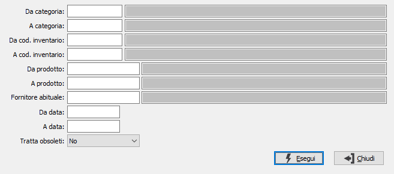

Articoli non movimentati
Il programma effettua la stampa dell’elenco degli articoli non movimentati fra le due date inserite dall’utente.

DA CATEGORIA: eventuale codice della categoria merceologica da cui si vuole iniziare la selezione di analisi. Sul campo è attiva la ricerca (F9) sulla tabella Categorie merceologiche.
A CATEGORIA: eventuale codice della categoria merceologica con cui si vuole concludere la selezione di analisi. Sul campo è attiva la ricerca (F9) sulla tabella Categorie merceologiche.
DA COD. INVENTARIO: eventuale codice Inventario da cui si vuole iniziare la selezione di analisi. Sul campo è attiva la ricerca (F9) sulla tabella Codici inventario.
A COD. INVENTARIO: eventuale codice Inventario con cui vi vuole concludere la selezione di analisi. Sul campo è attiva la ricerca (F9) sulla tabella Codici inventario.
DA PRODOTTO: eventuale codice dell'articolo, presente in anagrafica Prodotti, da cui si desidera iniziare la selezione dei movimenti di magazzino. Confermando a vuoto, la selezione inizia con il primo prodotto valido. Sul campo è attiva la ricerca (F9) sull’anagrafica prodotti.
A PRODOTTO: eventuale codice dell'articolo, presente in anagrafica Prodotti, a cui si desidera terminare la selezione dei movimenti di magazzino. Confermando a vuoto, la selezione termina con l’ultimo valido. Sul campo è attiva la ricerca (F9) sull’anagrafica prodotti.
FORNITORE ABITUALE: eventuale codice del fornitore abituale dei prodotti con cui si desidera effettuare la selezione dei prodotti. Sul campo è attiva la ricerca (F9) sull’anagrafica fornitori.
DA DATA: eventuale data da cui deve iniziare l’analisi dei movimenti di magazzino per gli articoli precedentemente selezionati. Confermando a vuoto, l’analisi inizia con il primo movimento valido.
A DATA: eventuale data con cui si desidera terminare l’analisi dei movimenti di magazzino per gli articoli precedentemente selezionati. Confermando a vuoto, l’analisi si conclude con l'ultimo movimento valido.
TRATTA OBSOLETI: definisce come se includere nell'analisi anche gli articoli obsoleti: Si, No, Solo obsoleti.